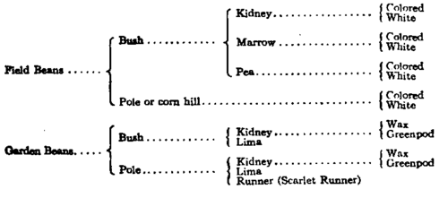

Bean (Vicia, Phaseolus)
Description
This section is from the book "Vegetable Gardening", by Ralph L. Watts. Also available from Amazon: Vegetable Gardening.
Bean (Vicia, Phaseolus)
288. History
The Broad bean (Vicia faba), believed to have originated in southwestern Asia, was known in ancient times. It is produced largely in Europe for stock feeding, and also grown to a considerable extent in Canada. It requires cool weather and a long season, and for these reasons the plant does not thrive in the United States. It is valued in Europe and in Canada as a forage crop, and the largie flat, angular seeds when ground are used as meal.
According to leading authorities, the common or kidney bean (Phaseolus vulgaris), from which all of our field and garden varieties have been derived, originated in tropical America. Although definite knowledge of its nativity has not been ascertained, there seems to be no doubt that many varieties were grown in America before they became generally cultivated in European countries. Beans were commonly grown by the Indians. The early settlers placed a high value upon this crop.
289. Classification
Kidney beans and lima beans (Phaseolus lunatus) are the species of greatest importance in vegetable gardening, while several others are valued for soil improvement, stock feeding or for ornamental purposes.
Various methods of classification have been suggested. Corbett (Farmers' Bulletin 289, pp. 7-8) has proposed the following arrangement, which is satisfactory for all practical purposes: "For convenience in reference and for discussion, beans may be divided into two general groups—'field' and 'garden' beans—which are by no means distinctly separate either in appearance or in characteristics. Each of these groups can again be divided into bush and pole beans. Bush beans of the field type are recognized, for commercial purposes, under three well-marked types, known as kidney, marrow and pea beans, each of which may be subdivided into two groups, colored and white. The garden beans, like the field beans, may be divided into bush and pole types; these again into kidneys and limas, the term 'kidney' in this case including all of the common garden beans whether of one type or another, and this group may again be divided into wax and green pod. The same subdivision may also be provided under pole beans, as is suggested in the following classification:"
Classification Of Beans According To Groups And Types
Various other terms are used to designate different types of beans, "Snap" refers to beans which may be eaten with the pod; this class is also known as string beans, although a good string bean is stringless. "Green shell" beans are those which are shelled and used before fully ripe, in distinction from dry shell beans, or those which are allowed to ripen before harvesting and cooking. All green shell beans may be permitted to mature, when they can then be used as dry shell beans.
290. Composition
All classes of beans possess high nutritive value, due to their large percentage of protein. The following table gives the composition of beans compared with other foods:
Composition Of Fresh And Dried Beans Compared With That Of Other Foods*
Material | Water | Protein | Fat | Carbohydrates | Ash | Fuel value per lb. |
Fresh Beans | % | % | % | % | % | calories |
String beans....... | 89.2 | 2.3 | 0.2 | 7.4 | 0.8 | 195 |
Shelled kidney beans Shelled lima beans.. | 58.9 | 9.4 | 0.6 | 29.1 | 2.0 | 740 |
68.5 | 7.1 | 0.7 | 22.0 | 1.7 | 570 | |
Dried beans | ||||||
Lima beans........ | 10.4 | 18.1 | 1.5 | 65.9 | 4.1 | 1,625 |
Navy beans........ | 12.6 | 22.5 | 1.8 | 59.6 | 3.5 | 1,605 |
Potatoes............ | 78.3 | 2.2 | 0.1 | 18.4 | 1.0 | 385 |
Cabbage ............ | 91.5 | 1.6 | 0.3 | 5.6 | 1.0 | 145 |
Rolled Oats.......... | 7.7 | 16.7 | 7.3 | 66.2 | 2.1 | 1,850 |
Wheat breakfast foods | 9.6 | 12.1 | 1.8 | 75.2 | 1.3 | 1,700 |
Lean beef........... | 70.0 | 21.3 | 7.9 | ------ | 1.1 | 730 |
Eggs............... | 73.7 | 14.8 | 10.5 | ------ | 1.0 | 720 |
291. Importance
All classes of beans are grown extensively for commercial purposes and the home garden is not complete without varieties representing each class. Snap or string beans are grown largely in the southern and Atlantic Coast states for the northern markets and are produced locally for the markets in all parts of the country. Millions of bushels of dried beans are produced annually by farmers, especially in Michigan, New York and California, while many other states produce large amounts. Most of the dried beans are of the small type, although California grows annually over 1,000,000 bushels of limas. Beans are produced on a large scale for canning, and shell beans occupy an important place in the operations of some commercial gardeners.
*Adapted from table, Farmers' Bulletin 221, p. 17.
292. As Soil Improvers
As the bean is a legume, and consequently a nitrogen-gathering plant, it occupies a prominent place in the commercial garden from the standpoint of soil improvement. It is a great advantage to be able to remove a profitable cash crop and to leave the land in better condition for subsequent crops. The bean, then, is a soil-improving rather than a soil-impoverishing crop. In recognition of this benefit, beans are sometimes planted in preference to more profitable crops which exhaust the soil to a greater extent. When snap or shell beans are grown, no part of the plant is removed except the pods and their contents, and in such instances the improvement in soil fertility should be especially marked. Because of their power to improve soils beans should be used more generally as inter-tillage crops. (See Chapter XXIII (Succession And Companion Cropping)).
Dr. B. D. Halstead of the New Jersey Experiment Station has observed that the tubercles are much more numerous on bean roots in old land than in new, and that the successive cropping of this legume increases the number of tubercles and also the yield of beans. While mention is made of the unsuccessful use of commercial cultures to secure more thorough inoculation, it is highly probable that soil from old bean fields, applied at the rate of 300 to 500 pounds an acre to land where beans have not been grown, would make nodule formation more active and yields larger. The results of many experiments in inoculating for alfalfa and other legumes would suggest the application of lime before spreading the soil on the land to be cropped.
Continue to:
Tags
plants, crops, gardening, cultivated, harvesting, food ,greenhouses, fertiliser, vegitables